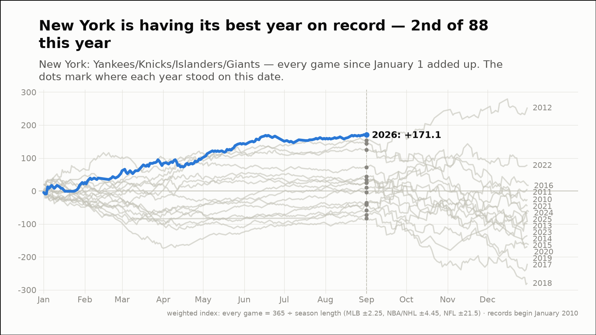
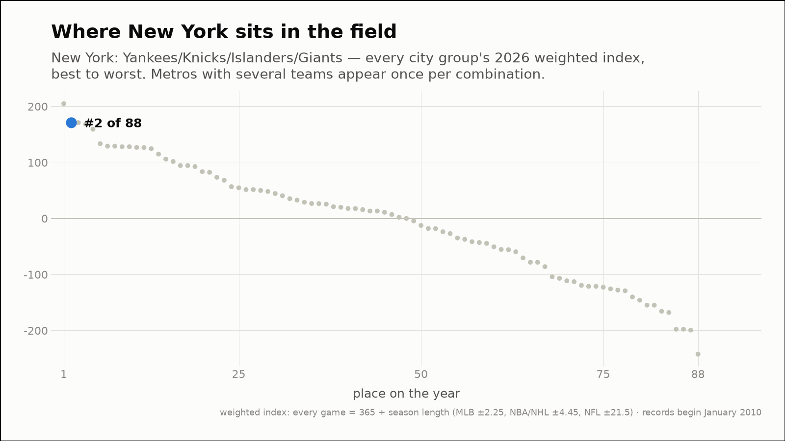
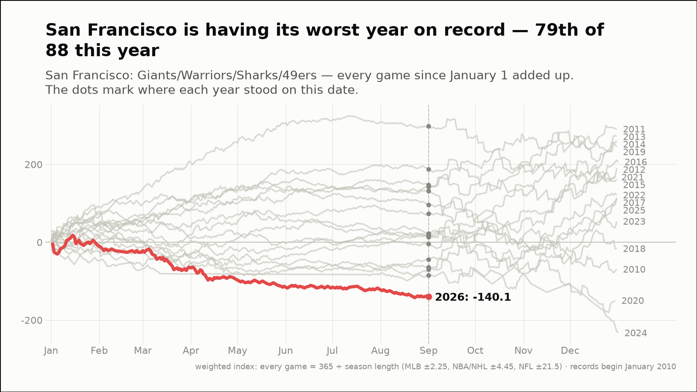
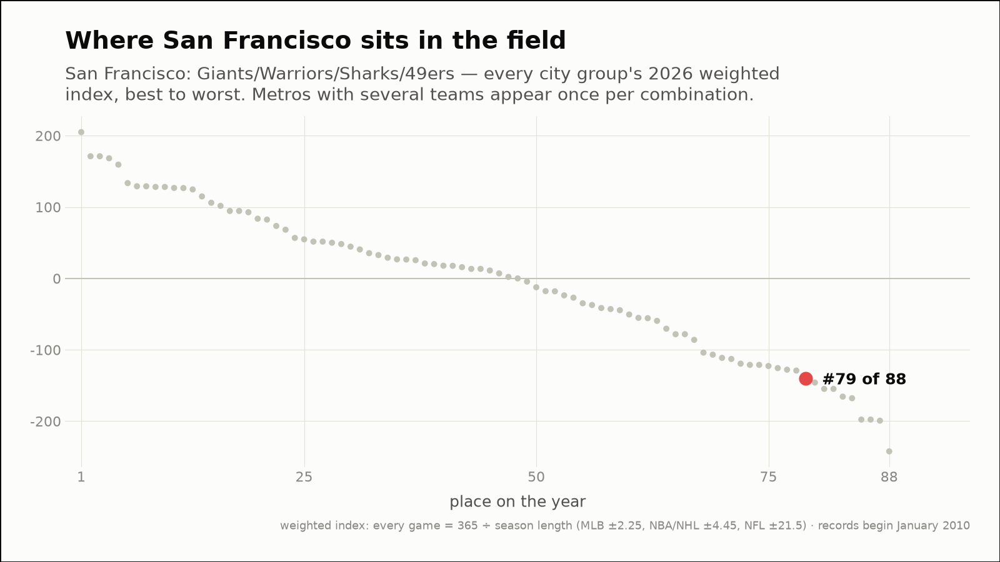
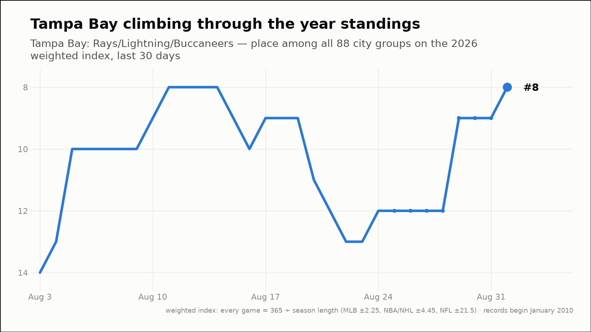
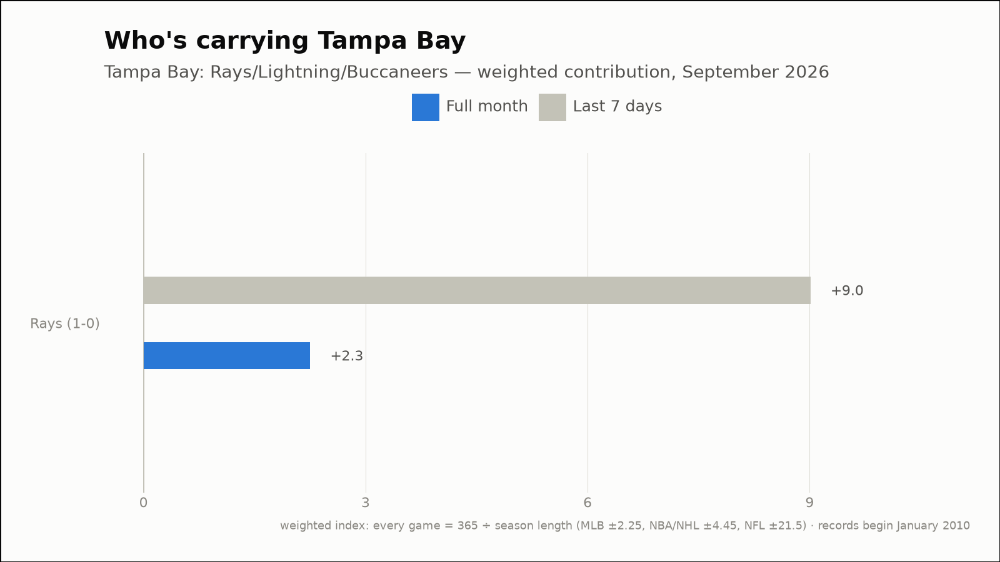

Out of the norm — three fandoms off their own script
The weekly hunt across all 88 city groups, through September 1, 2026
New York is having its best year on record — 2nd of 88 this year
New York: Yankees/Knicks/Islanders/Giants
- 2026 so far (through September 1)
- 147-103, +171.1 weighted — the best of the 17 years on record, at the same point
- Against the field
- 2nd of 88 city groups on the year (98th percentile)
- This month (through September 1)
- 1-0, +2.3 weighted
- Last 7 days
- 5-3, +4.5 weighted
- Driving it this week
- Yankees (5-3, +4.5)


San Francisco is having its worst year on record — 79th of 88 this year
San Francisco: Giants/Warriors/Sharks/49ers
- 2026 so far (through September 1)
- 97-137, -140.1 weighted — the worst of the 17 years on record, at the same point
- Against the field
- 79th of 88 city groups on the year (10th percentile)
- This month (through September 1)
- 0-1, -2.3 weighted
- Last 7 days
- 3-4, -2.3 weighted
- Driving it this week
- Giants (3-4, -2.3)


Tampa Bay has climbed 4 places in the 2026 standings this week (12th → 8th of 88)
Tampa Bay: Rays/Lightning/Buccaneers
- Year standings
- 12th → 8th of 88 (+120.1 → +129.1 weighted)
- This month (through September 1)
- 1-0, +2.3 weighted
- Last 7 days
- 5-1, +9.0 weighted
- Driving it this week
- Rays (5-1, +9.0)

